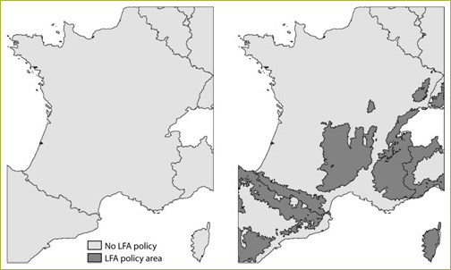
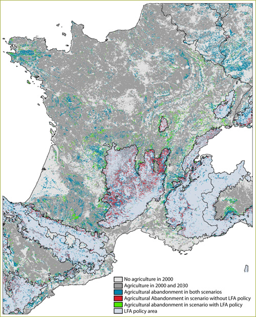
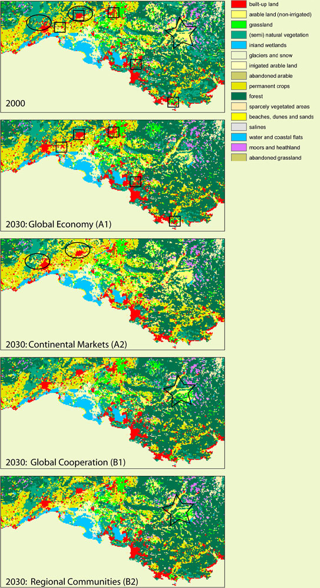
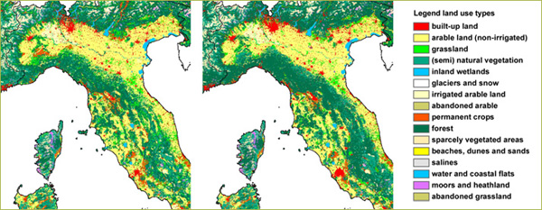
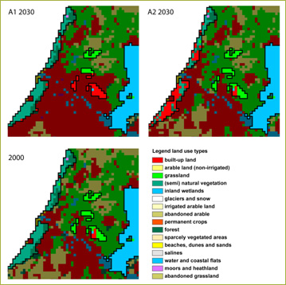
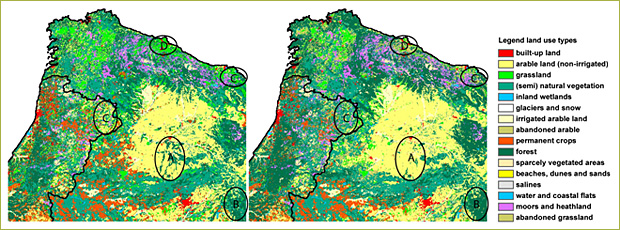
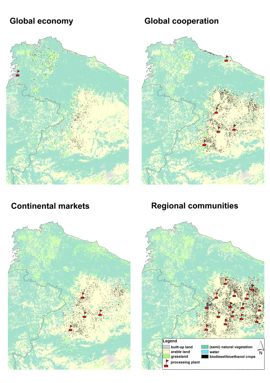
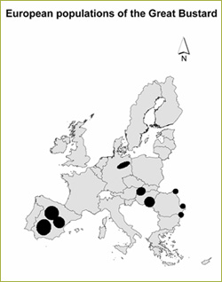

LFA in France - the impact on agricultural abandonment
The LFA policy is part of the CAP and is aimed
at location specific measures to support agriculture and its social and
environmental spin-offs. The aim of regulation is to ensure continued
agricultural land use and thereby contribute to the maintenance of a viable
rural community, to maintain the countryside and to maintain and promote
sustainable farming systems which in particular take account of environmental
protection requirements.
In Eururalis we have implemented three policy options for LFA. For a detailed
descriptions - see "Explore your future - About policy - LFA". In Figure 1a and 1b
two LFA options are shown. In figure 1a the policy without LFA and in figure
1b the policy options with the current LFA. In figure 2 the impact of
these different policy settings are illustrated.
|
||||||||||||||

Figure 1: 1a left: scenario without LFA policy,
1b - right: spatial delineation of the reduced LFA policy with only mountainous
areas.
From figure 5 the trade-off effect of limiting the LFA policy to mountainous
areas is clear. In blue we see the agricultural areas that were left abandoned
in both scenarios. The red areas were projected to be abandoned in the
scenario without LFA policy only. The green areas are abandoned in the
scenario with LFA policy only.
So, the LFA policy makes the red abandoned areas to shift to the green
areas. These are also areas that are mostly marginal for agriculture and/or
facing a population decline. Only supporting farmers in mountainous regions
will therefore lead to a shift in land abandonment to other marginal regions.
For this example it is assumed that the total area of land abandonment
is similar between the two scenarios; the green area is as large as the
red area. In reality the feedback of the subsidies will be that the total
production will be higher. In general the subsidies in the LFA areas cause
that the situation for the farmers in the non LFA areas becomes relatively
less good. However since the feedback of the subsidies is not included
the effect of land abandonment in the non LFA areas (for the scenario
with LFA policy), i.e. the green areas is a little overestimated.

Figure 2: Combined map of the effect of the LFA
policy on land abandonment in France
| top of page |
Rhone valley
The Rhone valley and Mediterranean coast are hot-spots of urbanization.
Already during the period 1990-2000 a lot of new urbanization occurred
in this region, both in the major city regions of Marseille, Nice and
Montpellier but also along the coast and near to the smaller towns in
the region. Especially in the Global Economy (A1) scenario urbanization
is strong. The squares in the figure indicate major urbanization areas.
The Continental Markets scenario shows a strong increase in permanent
crops in this region, especially in the Montpellier region semi-natural
vegetation is replaced by an extension of mainly vineyards (circles in
the figure). The other scenarios show an opposite trend, especially in
the Alps in the Eastern part of the region agricultural lands are abandoned
or converted to grasslands (star in figure).

| top of page |
Impact of change in land-use patterns in Italy
In Figure 1 an example of changes in land use pattern is shown for
the 2000 situation and the 2030 situation. The example is the Global Economy
baseline scenario.
What the results for this region clearly show, and what is also the general
trend in Europe, is that areas with a mixed and diverse land use pattern
are the first to face agricultural abandonment. In general these are often
also the most valuable landscapes with high interest from a biodiversity
(extensive high-nature value farmland areas) and tourism perspective.
Agricultural abandonment in these areas without specific forms of management
will lead to regrowth of semi-natural vegetation leading to a loss of
the identity and diversity of the landscape. In combination with depopulation
of such areas a decrease of biodiversity, cultural identity of the landscape
and tourism value is likely
.
Figure 1: Land use change example in northern
Italy showing the land use map of 2000 and 2030 for the Global Economy
baseline scenario.
| top of page |
Nature in the Netherlands
To illustrate some of the mechanisms in spatial allocation, which are
dependent on the amount of change in nature area and the spatial policies
that influence the allocation of land use, we consider figure 1. In the two
market oriented scenarios nature is only partly protected in the Natura 2000
areas (shaded in Figure 1). Conversions to agriculture are restricted, while
conversions to built-up area are allowed.
Even though there is a much stronger increase in built-up area in the
A1 scenario (and conversions to built-up are allowed in the Natura sites)
the Natura sites (non shaded areas in figure 1) are much more under thread
in the A2 scenario. (See for details table 2). In the A1 scenario the
increase in built area is in the decreasing agricultural areas. In the
A2 scenario the agricultural area is increasing. Therefore, the demand
for residential area comes at the expense of nature. The competition power
of agriculture is too high in the A2 scenario to be converted to built-up.
The amount and direction of land use change is very important in the land
use conversion that will occur (i.e. differences between scenarios in
competition between land use types).

Figure 1: Spatial land use pattern in NATURA
2000 sites for the A1 and A2 scenarios in 2030 (NATURA2000 sites are non-shaded).
Table 2: Aggregated land use development in the
Netherlands for the A1 and A2 baseline scenarios.
| % | Land use map 2000 | global economy (A1G1C1E1L1) | Continental Markets (A2G3C3E1L2) |
| Total nature | 11.3 | 10.9 | 5.8 |
| Built | 13.5 | 19.5 | 15.8 |
| agriculture | 73.6 | 66.1 | 76.7 |
Main landscape developments related to nature
in Spain

Figure 1: Different land use developments on
the Iberian Peninsula for the B1 baseline scenario.
Figure 1 shows an example of the main land use developments relating
to nature, which are representative for developments in Europe for all
scenarios:
A: Nature under pressure in areas suitable for agriculture. Unless strictly
protected forest and other nature may convert into agriculture.
B: Due to succession open landscapes may develop into forested areas.
Landscape diversity decreases. In some cases (for some species) this is
beneficial for biodiversity (species that need a large contiguous area
of a certain habitat). On the other hand biodiversity may decline caused
by a les diverse habitat. The biodiversity indicator will detail on this
topic.
C: Mixed agricultural/nature areas with marginal suitability for agriculture
are under pressure in a situation with declining demand for agricultural
area. As explained under B, this may have negative effects on biodiversity.
If these areas are HNVF (High Nature Value Farmland), incentives are developed
to protect these landscapes.
D: Agricultural area that is no longer necessary is abandoned and converts
to semi-natural vegetation (grasses, scrubs) first and later to forest.
| top of page |
Biofuel production in Spain.
Figure 1 shows the spatial pattern of the allocated biodiesel/bioethanol
crops in NW-Spain in 2030 in the four EUruralis baseline scenarios. The
location of biodiesel/bioethanol plants in the area is also given. There
are some important differences in the spatial pattern between these scenarios:
In the 'Global economy'-scenario, a very large plant is located at the
coast (i.e. at a sea-harbor) and a large hinterland caters feedstock to
this plant. In contrast, in the 'Regional communities'-scenario there
are many small plants and the biodiesel/bioethanol crops are cultivated
in the direct vicinity of these plants. The 'Continental markets' and
'Global Co-operation'-scenarios show a spatial pattern that can be considered
an intermediate between the 'Global economy'- and 'Regional communities'-
scenarios.
These outputs are consistent with the scenario assumptions; i.e. the 'Global
economy'-scenario assumes industrialized production of biofuels (large
plants located at logistical 'hubs', which import feedstock from a wide
area), whereas the 'Regional communities'-scenario assumes small-scale,
environment-friendly biodiesel/bioethanol production (smaller plants supplied
with local feedstock to avoid long-distance road transport and subsequent
CO2-emissions). The 'Continental markets' and 'Global Co-operation'-scenarios
have an intermediate position and assume that some plants will be located
at logistical 'hubs' to process feedstock from a wider area, and that
other plants will be located close to feedstock areas to process local
feedstock.

Figure 1. Biodiesel/bioethanol crops in
NW-Spain in 2030 in the different EUruralis-scenarios.
| top of page |
HNV, Natura 2000 and biofuels
In the 'Global Co-operation' and 'Regional communities' scenarios,
it was assumed that policies would be adopted that would ban biodiesel/bioethanol
cultivation in designated NATURA2000 areas. The policy of banning biodiesel/bioethanol
crops from NATURA2000 areas seems to be unnecessary. Although biodiesel/bioethanol
crops were banned from NATURA2000 areas in the 'Global Co-operation' and
'Regional communities' scenarios, this ban was absent in the 'Global economy'
and 'Continental markets' scenarios. Nonetheless, few biodiesel/bioethanol
crops were allocated within the NATURA2000 areas. This is probably due
to the fact that these areas are often marginal lands, not easily accessible
(i.e. mountainous terrain), and often lack good infrastructural and industrial
services in the region. This makes these regions unattractive for biodiesel/bioethanol
cultivation
Biodiesel /bioethanol cultivation could have a detrimental effect by stimulating further
intensification in European agriculture. This intensification could take place in the
following ways:
- A high demand for biodiesel/bioethanol crops could result in the replacement of 'pockets' of less intensively managed land (e.g. hedgerows, marginal lands, agri-environmental schemes, etc.) with biodiesel/bioethanol crops. That this is not an unrealistic scenario shows the situation of the Little Bustard (Tetrax tetrax) in France: The Little Bustard has disappeared from most European countries because of agricultural intensification. Populations still exists in some Europeans countries, among which France. EU-policy stipulates that farmers yearly leave a part of their land out of rotation (i.e. set-aside), and the remaining French populations rely almost exclusively on this set-aside land. In France, farmers often use this set-aside land in agri-enviromental schemes to generate income (as they are not allowed to cultivate food crops on these lands). Because they are also allowed to cultivate bioenergy crops on this set-aside land and these crops are more profitable than agri-environmental schemes, farmers are currently switching to biodiesel crops. This land use change process directly threatens the habitat of the Little Bustard in France. A similar situation has arisen in Austria, where set-aside land on which the Great Bustard (Otis tarda; see figure 2) depends, is increasingly being used for cultivating biodiesel crops. These reports are even more worrying as the few remaining European populations of both Little and Great Bustard are exactly located in those areas that are showing most growth in biodiesel/bioethanol crops (i.e. 'hotspots') according to the EUruralis biofuels-model. Large-scale cultivation of biodiesel/bioethanol crops can thus have serious impacts on both species
- Cultivation of biodiesel/bioethanol crops can lead to
landscape simplification; i.e. monocultures of biodiesel/bioethanol
crops could emerge that lack the diversity in crops and structure that
often gives European farmland it's ecological and landscape value. The
large bulk of biodiesel/bioethanol crops and associated transportation
costs to processing plants could push for a development where biodiesel/bioethanol
crops are located in monocultures around a processing plant. However,
a factor that could prevent such a development is that most biodiesel/bioethanol
crops are currently grown in rotational systems. Both (opposing) trends
were included in the EUruralis biofuels model to give insights into
the trade-off between these opposing trends. It is therefore interesting
to see that biodiesel/bioethanol crops clearly started dominating a
number of regions -despite including the rotational factor. Therefore,
the threat of landscape simplification does not seem unrealistic.
- As Eastern Europe has a substantial larger area HNV farmland than Western Europe, the total area of biofuel crops cultivated within HNV farmland is much higher in Eastern Europe than in Western Europe. The cultivation of biofuel crops can have serious environmental impacts in these HNV farmland areas. Moreover, agriculture in Eastern Europe is in general less intensive than in Western Europe and farmland biodiversity is consequently higher than in Western Europe. However, rapid development is expected to occur in most Eastern European countries after accession to the EU and this probably includes intensification of agriculture. A high demand for biofuels could further stimulate such intensification. Indeed, the biofuels-model shows an enormous increase of biodiesel /bioethanol crops in Eastern Europe. Although the increase in biodiesel/bioethanol crops in Eastern Europe is highest in the 'Global Co-operation'- and 'Regional communities'-scenarios (which assume strong EU support for the production of biofuels), the increase in biodiesel/bioethanol crops is also markedly in the other scenarios. 'Hotspots' of biodiesel/bioethanol cultivation in Eastern Europe include even some ecologically valuable regions such as the Pannonian plain (Hungary, Sloviaka, and Austria), parts of Poland and the Baltic. Given the relatively high biodiversity of most Eastern European farmland and the allocation of biofuels in some ecologically very valuable regions, the introduction of biodiesel/bioethanol crops could have some serious impacts on farmland biodiversity in Eastern Europe.
| 
Figure 3. Distribution of the Great bustard (Otis tarda) in Europe (based on The EBCC Atlas of European Breeding Birds). |
| top of page |